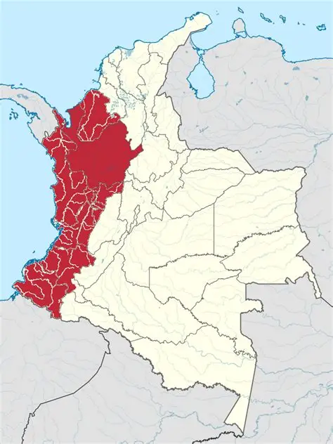

Ruta Gastronómica Colombiana
¡Ven y conoce los platos típicos de cada región Colombiana!
Región Andina
Ubicada en el corazón del país, está formada por las tres cordilleras de los Andes.
Es la región más poblada y variada en clima y cultura.
Aquí se encuentran ciudades principales como Bogotá, Medellín y Bucaramanga.

Platos Típicos
Bandeja Paisa
 |
La bandeja paisa es un plato tradicional de Antioquia. En la bandeja podras encontarr ingredientes como : Arroz Frijoles Carne molida Chicharrón Chorizo Huevo frito Plátano maduro Arepa y aguacate. Ademas es una comida muy completa y representativa de la región. |
Ajiaco Santafereño
 |
El ajiaco es un plato tipico santafereño. Se compone de: Sopa espesa de papas con pollo, mazorca y guascas, típica de Bogotá. Se acompaña con arroz, aguacate, alcaparras y crema de leche. |
Lechona Tolimense
 |
Cerdo relleno de arroz, arvejas y especias, horneado lentamente. Se sirve con arepa blanca y cuero crocante. |
Cocido Boyacense
|
|
Guiso tradicional con carnes, papa, yuca, mazorca y verduras. Representa la cocina campesina boyacense. |
Mute Santandereano
 |
Sopa espesa con maíz, carne, papa, garbanzos y a veces vísceras. Muy nutritiva y característica de Santander. |
Región Orinoquía
Está ubicada en el oriente del país, en una extensa llanura.
Tiene un clima cálido y sabanas que se extienden hasta Venezuela.
La vida llanera gira en torno a la ganadería, la música y los caballos.
Sus platos típicos incluyen carnes asadas como la mamona.

Platos Típicos
Mamona (carne a la llanera)
|
|
Carne de ternera asada al carbón sobre estacas, sazonada solo con sal0. Emblema de los Llanos. |
Pisillo de carne seca o chiguiro
|
|
Carne desmechada y salada, preparada con cebolla y ají. Acompañada con yuca y plátano. |
Hallacas Llaneras
|
|
Masa de maíz rellena con guiso de carne, envuelta en hojas de plátano y cocinada al vapor. |
Cachama Asada
|
|
Pescado típico de los ríos de la región, asado entero y acompañado de yuca o arroz. |
Tungos Llaneros
|
|
Bocados de masa de arroz con queso, envueltos en hoja de plátano y cocinados al vapor. |
Región Amazónica
Se localiza al sur del país y está cubierta por la selva del Amazonas.
Es una región con gran diversidad ecológica y cultural.
Habitada por pueblos indígenas que conservan tradiciones ancestrales.
Su gastronomía incluye ingredientes exóticos como el pescado de río y frutas selváticas.
Platos Típicos
Pescado Moqueado
|
|
Pescado de río cocinado lentamente en fuego bajo y ahumado con hojas. Sabor profundo y ancestral. |
Caldo de Picuro
|
|
Sopa elaborada con carne de picuro, un roedor silvestre. Plato típico de las comunidades amazónicas. |
Bagre en salsa
|
|
Pescado de río preparado en salsa de tomate, cebolla y especias. Acompañado de arroz y yuca. |
Casabe con fariña y pescado
 |
Pan crujiente de yuca acompañado de fariña (harina de yuca tostada) y pescado cocido o frito. |
Sancocho de gallina con yuca y plátano
 |
Versión amazónica del sancocho, con ingredientes locales y cocinado con leña. |
Región Pacífica
Se encuentra en el occidente de Colombia, bañada por el océano Pacífico.
Tiene una biodiversidad impresionante y una fuerte herencia africana.
Es una región lluviosa y rica en cultura musical como el marimba y el currulao.
Su gastronomía incluye muchos platos con pescado, coco y mariscos.

Platos Típicos
Encocado de camarón o pescado
|
|
Mariscos o pescado cocinados en salsa de coco con cebolla, pimientos y achiote. Muy aromático. |
Sancocho de gallina criolla
 |
Sopa con gallina de campo, yuca, plátano, papa y mazorca. Ideal para compartir en familia. |
Arroz atollado
 |
Arroz cremoso con carne de cerdo, pollo y papas. Plato reconfortante típico del Valle del Cauca. |
Tapao de pescado
|
|
Guiso de pescado con plátano, yuca y coco. Se cocina envuelto en hojas de plátano. |
Cazuela de mariscos
|
|
Guiso cremoso con camarones, calamares, mejillones y pescado, cocinado en leche de coco y especias. |
Región Caribe
Ubicada al norte del país, a orillas del mar Caribe.
Tiene un clima cálido y una gran influencia afrodescendiente e indígena.
Es reconocida por su alegría, música y festividades como el Carnaval de Barranquilla.
Su comida es rica en pescados, arroces y fritos tradicionales.

Platos Típicos
Arepa de huevo
 |
Arepa frita rellena con un huevo entero. Crujiente por fuera y suave por dentro. Comida callejera muy popular en la costa. |
Mote de queso
|
|
Sopa espesa a base de ñame, queso costeño y suero. Cremosa, salada y muy sabrosa. |
Arroz con coco y pescado frito
 |
Arroz cocinado en leche de coco, acompañado con pescado entero frito y patacones. Clásico plato playero. |
Butifarra soledeña
 |
Salchicha pequeña y condimentada, servida con yuca y limón. Tradicional de Soledad, Atlántico. |
Friche
|
|
Carne de chivo frita con su propia grasa y especias. Plato tradicional wayuu en La Guajira. |